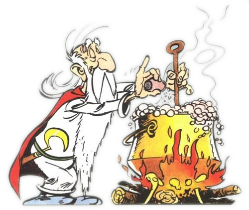

Introduction
à l'Open Source et
au travail collaboratif
Qui et pourquoi ?
 @mathieutu
@mathieutu
Le programme :
Mercredi 28 sept - 8h/9h30 :
- Intro open-source
- Intro VCS
- Préparation TP / (Devoirs à la maison ?)
Jeudi 6 oct - 8h/11h :
- Travaux Pratiques
Mercredi 12 oct - 8h/9h30 :
- Retours
- Consolidations
- Être autonome
L'open source ?
- Free Software Foundation
- Open Source Initiative
"Free software is a political movement; open source is a development model." (Richard Stallman)
C'est déjà fini...
Un peu de gestion de projet...
La théorie

- Ecrire plusieurs fichiers et types de fichiers
- Editer ces fichiers plusieurs fois
- Etre capable d'annuler ces changements
- Création
- Titre
- Mise en forme
- Orthographe
- Nouveau §
- Re-Mise en forme
- mon_fichier.txt
- mon_fichier_avec_titre.txt
- mon_fichier_avec_couleur.txt
- mon_fichier_correction_orthographe.txt
- ...
- mon_fichier_version_finale.txt
- mon_fichier_version_la_vraie.txt
- mon_fichier_v1.txt
- mon_fichier_v2.txt
- mon_fichier_v3.txt
- ...
- mon_fichier_v134.txt
- mon_fichier_v212.txt
- mon_fichier_2016-09-21.txt
- mon_fichier_2016-09-22.txt
- mon_fichier_2016-09-22_2.txt
- mon_fichier_2016-09-23.txt
- ...
- Quand ?
- Quoi ?
- Pourquoi ?
- Création
- Titre
- Mise en forme
- Orthographe
- Nouveau §
- Re-Mise en forme
- Quand ?
- Quoi ?
- Pourquoi ?
- Par qui ?

- consigne les versions des documents
- garde un historique des changements
- gère le travail d'équipe
Les VCS


 https://jahya.net/blog/git-vs-github/
https://jahya.net/blog/git-vs-github/
 https://jahya.net/blog/git-vs-github/
https://jahya.net/blog/git-vs-github/
 https://jahya.net/blog/git-vs-github/
https://jahya.net/blog/git-vs-github/